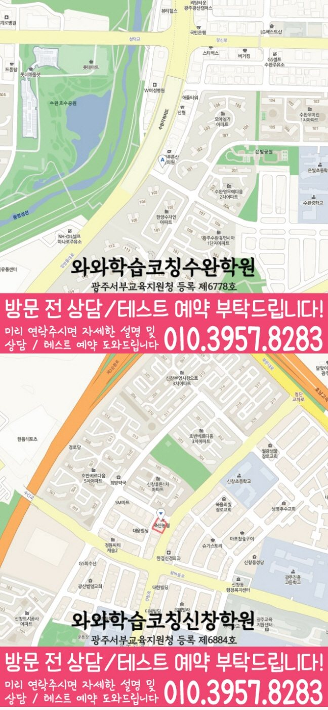

High school Korean · English · Math
수완지구 고등학생 국영수학원
수완지구 고등학생 국영수학원 선택 전 고등 내신 자료, 최근 오답과 과목별 가능 학년, 센터 위치·비용 확인 기준을 안내합니다.
01 Quick answer
수완지구에서 먼저 확인할 내용
수완지구에서 고등학생 국영수학원을 찾는다면 와와학습코칭센터 수완점의 과목별 가능 학년을 먼저 확인하세요. 제공된 고등학교 참고 자료와 학생의 실제 교재를 대조하고, 학생의 실제 풀이 기록에 맞게 현재 자료에서 확인한 문제를 수업, 복습과 재점검으로 연결하는지 살펴봐야 합니다.
대표 학생 상황
세 과목의 과제 순서와 오답 복습 시점을 스스로 정리하기 어려운 고등학생


010-6839-8283010-6839-8283상담 전 핵심 안내
수완지구에서 고등학생 영어·수학 학원을 찾는 학생을 위해, 현재 실력 진단부터 개념 보완, 내신·수능형 문제풀이, 오답 관리까지 이어지는 학습 흐름을 안내합니다. 지역 센터는 학생마다 다른 목표와 학습 속도를 확인해 체계적인 계획과 코칭으로 학습 기록이 이어지도록 수업을 진행합니다. 수완지구 고등학생 국영수학원 선택에서 핵심은 막연한 설명이 아니라 국어·영어·수학의 누수가 어떻게 발견되고 보완되는지입니다. 수완지구 학생의 실제 공부 장면을 중심으로 상담 기준을 살펴봅니다.
학습 순서를 정할 때 확인할 내용
실력 진단으로 학습 방향을 먼저 잡습니다. 무작정 문제부터 풀기보다 영어·수학의 개념 이해도와 풀이 습관을 점검해, 학생에게 필요한 단원과 우선순위를 정확히 설정합니다.
영어·수학 영점 조절(균형 학습). 수완지구 학습 순서를 정할 때는 다시 풀기 결과를 바탕으로 학습 상태를 구체적으로 확인합니다.
고등 국어·영어·수학 관리 기준의 내신 대비는 시험 기간에만 갑자기 시작되는 과정이 아닙니다. 수완지구에서 비슷한 공부 습관을 가진 학생에게 기말 기간에는 과목별로 남은 범위를 시각화하고, 국어·영어·수학의 우선순위를 하루 단위로 조정해야 합니다. 광주광역시 광산구 수완지구 고등학생이 국어·영어·수학을 함께 관리하려면 오답은 틀린 이유, 다시 풀 날짜, 비슷한 문제 적용 여부까지 남겨야 다음 시험의 자료가 됩니다. 수완지구 고등학생 세 과목 학습 상담에서 시험 3주 전에는 범위표를 단원별 과제로 바꾸고, 시험 2주 전에는 틀린 문항을 유형별로 묶어야 합니다.
풀이 과정과 복습을 연결하는 기준
설명보다 ‘이해’ 중심으로 지도합니다. 어디에서 막히는지 질문과 풀이 과정을 확인하고, 필요한 개념을 다시 연결해 반복되는 실수를 줄이도록 돕습니다.
학습 태도와 오답 습관까지 관리합니다. 수완지구 다음 학습 단계에서는 최근 풀이 기록을 바탕으로 다음 보완 순서를 정합니다.
방문 전 전화 문의에서 많이 정리되는 부분은 “수완지구 고등학생의 국어·영어·수학 학습 점검에서 우리 아이가 세 과목을 모두 따라갈 수 있을까”라는 점입니다. 광주광역시 광산구 수완지구 기준으로는 고등 국어와 영어, 수학을 한꺼번에 늘리는 계획보다는 학생이 혼자 끝낼 수 있는 분량부터 파악해야 합니다. 고등학생의 최근 풀이에서 과목별로 멈추는 지점을 먼저 구분해야 합니다. 상담 기록에 현재 범위, 반복해 틀린 문제와 완료 시간을 남겨 수완지구 학생에게 필요한 보완 순서를 찾습니다. 수완지구 학습 계획의 출발점은 오늘 실천하고 다음 점검에서 확인할 기준을 고르는 일입니다.
수완지구 고등학생 학교 자료와 과목별 계획 연결
상담 자료를 정리하면, 수완지구 고등학교 참고 정보에는 수완고·장덕고가 포함됩니다. 센터 안내와 비교할 때, 학교명만으로 수업 가능 여부를 판단하지 않고 센터의 현재 개설 범위를 함께 확인해야 합니다.
학생 자료를 먼저 펼쳐 보면, 수완지구 학생이 사용하는 시험 범위표·학교 프린트·수행평가 일정 자료를 가져오면 국어·영어·수학의 현재 단원과 준비 일정을 구체적으로 확인할 수 있습니다. 다음 계획을 정하기 전에, 자료가 수업 진도와 재확인 날짜에 반영되는지도 물어보세요.
현재 수준에 맞춘 점검 단계
1. 현재 수준 확인. 학년, 학교 진도, 최근 시험 성적과 오답 유형을 바탕으로 부족한 개념과 자주 틀리는 문제 패턴을 정리합니다.
2. 개념 정리와 유형 학습. 바로 문제풀이로 들어가기보다 핵심 개념을 먼저 정리한 뒤, 내신형부터 수능형까지 단계적으로 난이도를 올려 연습합니다.
3. 오답 관리와 학습 피드백. 틀린 문제를 재풀이하는 데서 끝내지 않고, 오답 원인을 분류해 다음에 어떻게 접근해야 하는지까지 정리합니다.
수완지구 상담에서는 현재 교재 진도를 바탕으로 학생이 다음 주에 바꿀 학습 행동을 구체적으로 정해야 합니다. 고등 국어·영어·수학 과제 수행, 오답 반복, 복습 주기를 함께 확인해야 합니다. 광주광역시 광산구 수완지구 고등학생에게 학습 관리는 부모님의 잔소리를 늘리는 방식보다 학생이 자신의 약점을 말로 설명할 수 있게 돕는 방향이 필요합니다.
현재 학년에 맞춘 과목별 준비
고1. 학교 진도에 맞춘 개념 보완과 기본 유형을 탄탄히 잡습니다. 문법·독해 흐름, 수학 단원별 필수 개념을 반복 점검합니다.
고2. 내신 대비를 중심으로 단원별 취약 파트를 집중적으로 보강합니다. 수완지구 수업 계획에서는 복습 이력을 바탕으로 상담에서 확인할 기준을 정리합니다.
고3. 내신과 수능형 문제를 구분해 목표에 맞춘 우선순위로 학습 전략을 세웁니다. 수완지구 학습 과정에서는 진단 결과를 바탕으로 상담에서 확인할 기준을 정리합니다.
시험 대비. 시험 범위와 제공된 시험지의 문항 유형에 맞춰 복습 계획을 조정하고, 효율적인 학습 동선을 만듭니다. 시험 전에는 실수 유형과 자주 틀리는 문제를 우선 점검해 안정적인 점수를 목표로 합니다.
수완지구 지역 센터는 학생의 현재 상태를 기준으로 영어·수학 학습을 정리하고, 상담을 통해 내신과 수능형 학습 방향까지 구체적으로 정리합니다.
02 Consultation examples
수완지구 학부모 상담 상황 예시
아래 내용은 실제 고객 후기나 성적 결과가 아니라, 상담에서 확인할 질문을 이해하기 위한 상황 예시입니다.
최근 학교 학습 준비가 한 과목에 치우친 수완지구 고등학생을 가정했습니다. 학부모는 현재 교재와 학교 자료를 바탕으로 국어·영어·수학의 병목을 따로 듣고, 가정에서 확인할 기록을 정리합니다.
수완지구에서 제공된 고등학교 참고 정보인 수완고·장덕고의 목록과 학생의 실제 학교 자료를 대조해 질문하는 경우입니다. 학부모는 교습비와 시간표뿐 아니라 과목별 진단 근거, 보완 순서와 일정 시간이 지난 뒤 재확인하는 방법까지 질문합니다.
03 FAQ
수완지구 고등학생 국영수학원 자주 묻는 질문
학부모님이 상담 전에 자주 확인하는 내용을 질문과 답변으로 정리했습니다.
수완지구 고등학생 국영수학원 선택 전 학생의 어떤 습관을 살펴야 하나요?
시험 일정은 알고 있지만 실행 가능한 주간 분량을 정하기 어렵다면 최근 교재와 학교 자료를 가져가 보세요. 수완지구 상담에서 집중 과목과 최소 복습량을 구분할 수 있습니다.
수완지구 국영수 학습에서 과목별 병목을 어떻게 나누나요?
수완지구 상담에서는 세 과목을 같은 분량으로 나누기보다 최근 시험과 학교 일정, 반복 오답을 기준으로 우선순위를 정합니다. 과목별 완료 기준이 있어야 계획과 실제 실행의 차이를 확인할 수 있습니다.
수완지구 학교별 교과 자료는 어떤 방식으로 확인하나요?
수완고·장덕고 등은 확인된 참고 학교명이며 수업 가능 학교를 단정하지 않습니다. 학생의 실제 자료와 센터별 개설 과목을 함께 놓고 상담하세요.
수완지구 상담 전에 센터 위치와 교습비는 어디에서 확인하나요?
수완지구 상담 전에는 실제 방문 위치를 위 센터 확인 정보에서 확인할 수 있습니다. 센터별 교습비 확인 버튼에서 제공 자료를 볼 수 있습니다. 마지막으로 개설 과목, 가능 학년과 통학 가능한 수업 시각을 기록해 비교하세요.
04 Continue
수완지구 페이지 이동
카테고리 전체 지역 또는 앞뒤 지역 안내로 이동할 수 있습니다.